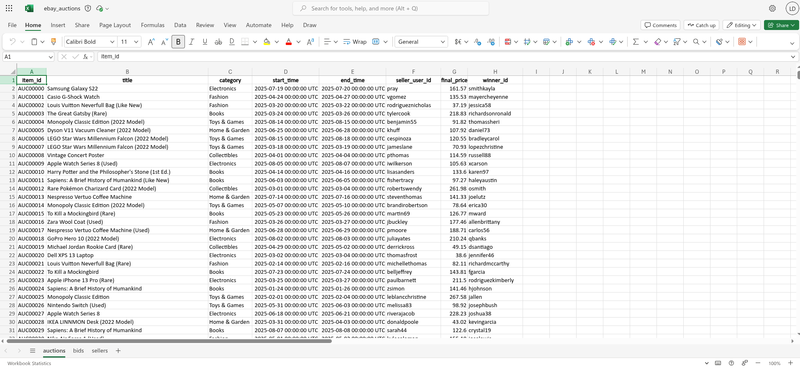

7 Storing and Using Existing Data
Learning Goals
By the end of this lecture, you should be able to:
- Identify common data storage formats (CSV, JSON, SQL, Parquet) and explain when each is appropriate for business use.
- Load, explore, and manipulate datasets stored in flat files and nested JSON using R.
- Use unnesting and reshaping techniques to convert nested or redundant data structures into tidy formats.
- Read and query data stored in databases using
duckdbanddplyr. - Evaluate trade-offs between different storage formats in terms of scalability, structure, and analytical convenience.
- Apply best practices for storing, documenting, and sharing data within an organization.
7.1 The Business Challenge
Online marketplaces like eBay host millions of auctions each year, connecting buyers and sellers across countless product categories. Behind the scenes, this generates complex, nested, and high-volume data. For a business analyst, turning this raw data into useful insights—and storing it in a way that’s efficient, accessible, and reusable—is a foundational challenge.
Suppose you’ve just joined the data team at this fast-growing online marketplace. Right now, every team — from marketing to data engineering and customer support — is handling auction data in different ways: some use Excel sheets, others parse logs from an API that stores information in a format called JSON, and data engineers keep things in a database (but no one else knows how to read them!).
This chaos is slowing everyone down. Your first task as a new analyst is to propose a better data storage solution that balances usability, scalability, and efficiency for teams across the business.
But how do you choose the right format? Should you push everyone to use Excel spreadsheets? Why not convince everyone to move everything into a database?
Before you decide, you’ll need to understand the strengths and trade-offs of each major data storage format. That is what we will cover in this chapter.
About the Data
To guide your decision, we’ll work with a sample dataset of online auctions. Each auction record includes:
- Item metadata: ID, title, category, seller info
- Seller details: user ID, rating
- Bidding history: a nested list of bids, each with a bidder ID, amount, and timestamp
We have stored and structured the dataset in multiple formats — Excel, flat files (CSV), JSON and DuckDB — so you can compare how different formats impact usability and performance. Along the way, you’ll learn not just how to load data, but how to think about storing and transforming it for long-term use in a business setting.
Which of data formats have you heard of?
Which of the data formats that we will cover in this chapter have you already heard of?
- Excel
- CSV files
- A database
- JSON
Where did you learn about the formats you are aware of? What limitations have you found when using them?
7.2 Spreadsheets (Excel & Friends)
For many of us, spreadsheets like Microsoft Excel or Google Sheets are the default way we have worked with data until starting our business analytics journey.
Reading Spreadsheets in R
The figure above shows what the spreadsheet we’re going to read into R looks like in Excel. We see that there is data across three separate sheets:
auctionscontains information about the each auction,bidscontains information about bids in each auction; andsellerscontains information about the seller of each item
To load the spreadsheet data into R, we use the readxl package, which allows us to read .xlsx files directly without requiring Excel to be installed.
# A tibble: 6 × 8
item_id title category start_time end_time seller_user_id
<chr> <chr> <chr> <dttm> <dttm> <chr>
1 AUC00000 Sams… Electro… 2025-07-19 00:00:00 2025-07-20 00:00:00 pray
2 AUC00001 Casi… Fashion 2025-04-24 00:00:00 2025-04-27 00:00:00 vgomez
3 AUC00002 Loui… Fashion 2025-03-20 00:00:00 2025-03-22 00:00:00 rodrigueznich…
4 AUC00003 The … Books 2025-03-24 00:00:00 2025-03-26 00:00:00 tylercook
5 AUC00004 Mono… Toys & … 2025-08-14 00:00:00 2025-08-15 00:00:00 benjamin55
6 AUC00005 Dyso… Home & … 2025-06-25 00:00:00 2025-06-28 00:00:00 khuff
# ℹ 2 more variables: final_price <dbl>, winner_id <chr>library(readxl)
# Read a spreadsheet file
auctions_excel <- read_excel("data/ebay_auctions.xlsx")
# Peek at the first few rows
head(auctions_excel)We can see that by default, R loads the auctions sheet which is the first sheet in the Excel workbook. If we want to specify the sheet we want to load, we can do that as follows:
# A tibble: 6 × 4
item_id bidder_id bid_amount bid_time
<chr> <chr> <dbl> <dttm>
1 AUC00000 istevens 94.6 2025-07-19 00:00:00
2 AUC00000 mendozajasmine 97.7 2025-07-19 00:00:00
3 AUC00000 james22 103. 2025-07-19 00:00:00
4 AUC00000 wnunez 119. 2025-07-19 00:00:00
5 AUC00000 paynejoshua 124. 2025-07-19 00:00:00
6 AUC00000 yolanda40 127. 2025-07-19 00:00:00# Read a specific sheet
excel_bids <- read_excel("data/ebay_auctions.xlsx", sheet = "bids")
# Or use sheet number
excel_bids <- read_excel("data/ebay_auctions.xlsx", sheet = 2)
head(excel_bids)Issues with Spreadsheets
Spreadsheets are widely used in business and education, and offer an approachable interface for organizing tables, applying formulas, and making quick charts. This makes spreadsheets a great entry point into the world of data—but also a format with serious limitations when it comes to analytics at scale.
Spreadsheets don’t record your steps, meaning you can’t always retrace how a certain number or figure was calculated. There’s no built-in version history (at least not one that’s easy to audit), and formulas often vary invisibly from cell to cell—especially if you’ve copied or dragged them across a range. This makes it difficult to ensure consistency and nearly impossible to reproduce or validate your results.
Even small errors—like accidentally referencing the wrong column—can go unnoticed. A single cell with a broken formula can distort an entire analysis. These issues are especially problematic when figures or charts are being used for decisions or presentations.
To make matters worse, analysts often inherit spreadsheets from others—colleagues, clients, or external partners. These files might contain:
- inconsistent naming conventions
- manual totals
- hidden formatting or comments
- merged cells
- duplicated values across tabs
all of which make using them for further analysis difficult.
Despite these flaws, spreadsheets remain a powerful tool for quick exploration and lightweight collaboration. They’re useful for small teams, early prototyping, or downloading data from platforms like Shopify, Facebook Ads, or Google Analytics. But when your work moves toward reproducibility, scalability, or automation, it’s time to adopt formats designed for analysis.
Writing to Excel
Despite not wanting to use Excel files as an output, we might want to export the final results for an Excel workbook to pass on to a less technical colleague. To do this, we need the library writexl to save datasets to an Excel format. Let’s create a small data frame that we can then write out to a file. Specifically, lets filter all bids from the auction with the ID AUC00001 and save them in a file names small_bids.xlsx:
library(tidyverse)
library(writexl)
colnames(excel_bids)
bids_to_export <-
excel_bids |>
filter(item_id == "AUC00001")
write_xlsx(bids_to_export, "small_bids.xlsx")
Reading and Writing from Google Sheets
Google Sheets is another widely used spreadsheet program. It’s free and web-based. Just like with Excel, in Google Sheets data are organized in worksheets (also called sheets) inside of spreadsheet files.
You can load data from a Google Sheet with the googlesheets4 package. This package is non-core tidyverse as well, you need to load it explicitly.
The first argument to read_sheet() is the URL of the file to read, and it returns a tibble: https://docs.google.com/spreadsheets/d/1V1nPp1tzOuutXFLb3G9Eyxi3qxeEhnOXUzL5_BcCQ0w. These URLs are not pleasant to work with, so you’ll often want to identify a sheet by its ID.
library(googlesheets4)
gs4_deauth()
sheet_id <- "1V1nPp1tzOuutXFLb3G9Eyxi3qxeEhnOXUzL5_BcCQ0w"
google_df <- read_sheet(sheet_id)You can also write from R to Google Sheets with write_sheet(). The first argument is the data frame to write, and the second argument is the name (or other identifier) of the Google Sheet to write to:
write_sheet(bids_to_export, ss = "bids_auc10001")If you’d like to write your data to a specific work-sheet inside a Google Sheet, you can specify that with the sheet argument as well.
write_sheet(bake_sale, ss = "bids_auc10001", sheet = "bids")
Authentication with Google Sheets
While you can read from a public Google Sheet without authenticating with your Google account and with gs4_deauth(), reading a private sheet or writing to a sheet requires authentication so that googlesheets4 can view and manage your Google Sheets.
When you attempt to read in a sheet that requires authentication, googlesheets4 will direct you to a web browser with a prompt to sign in to your Google account and grant permission to operate on your behalf with Google Sheets. However, if you want to specify a specific Google account, authentication scope, etc. you can do so with gs4_auth(), e.g., gs4_auth(email = "mine@example.com"), which will force the use of a token associated with a specific email. For further authentication details, we recommend reading the documentation googlesheets4 auth vignette: https://googlesheets4.tidyverse.org/articles/auth.html.
7.3 Flat Files (CSV, TSV and other delimited files)
When we need to store and share structured data reliably, especially in a way that can be reproduced by code, an alternative format often works better: flat files. Flat files look similar to spreadsheets on the surface—just rows and columns of data—but under the hood they behave very differently. A flat file is stored as plain text. Each line represents a row of data, and the values are separated by a special character like a comma or tab. There are no formulas, no styling, no hidden or merged cells - just the raw information. There is another difference compared to Spreadsheets like Excel, flat files store each data set as a separate file, so there is no concept of multiple sheets if information stored in the same file.
One of the most common flat file types is the CSV, which stands for Comma-Separated Values. You have already encountered files with a .csv extension in the earlier chapter in this book, all the data we have worked with so far has been stored as CSV files.
For our auction example this means there are 3 CSV files, one each for auctions, bids and sellers
Because CSVs simply store raw information, we can see the content of the file when we open it in a text editor. Here’s what the first few lines of bids.csv looks like when opened in a text editor:
We can see that we can view and read the data with our own eyes. As such flat files are easy to inspect manually. The first row, commonly called the header row, gives the column names, and the following six rows provide the data. The columns are separated, aka delimited, by commas. They are also easy to edit, as we can manually add or edit rows and save the results if desired. These are not the only advantages of flat files, they are supported by nearly every data analytics tool so they are extremely portable which makes them a common default choice when exporting data from software such as R.
What do Excel Files Look Like in a Text Editor?
Not all files can be viewed as cleanly as flat file formats such as csv in a text editor. If we tried to do the same thing, and view the first few lines of ebay_auctions.xlsx in a text editor, we will get the following output:
That’s not so useful!
7.3.1 Reading Flat Files in R
In R, we can use the readr package to import flat files quickly and reliably. We can read this file into R using read_csv(). The first argument is the most important: the path to the file. You can think about the path as the address of the file: the file is called bids.csv and it lives in the data folder.
library(readr)
# Read a CSV file into a tibble
bids_flat <- read_csv("data/bids.csv")Rows: 13414 Columns: 4
── Column specification ────────────────────────────────────────────────────────
Delimiter: ","
chr (2): item_id, bidder_id
dbl (1): bid_amount
dttm (1): bid_time
ℹ Use `spec()` to retrieve the full column specification for this data.
ℹ Specify the column types or set `show_col_types = FALSE` to quiet this message.When you run read_csv(), it prints out a message telling you the number of rows and columns of data, the delimiter that was used, and the column specifications (names of columns organized by the type of data the column contains). It also prints out some information about retrieving the full column specification and how to quiet this message.
Delimiters and File Extensions
The character that separates columns in a flat file is called a delimiter. Common ones include:
- Comma (,) — for .csv files
- Tab ( — for .tsv files
- Pipe (|) — occasionally used for exports from databases
If we wanted to load the the file bids.tsv which uses Tab separated values:
head ../data/bids.tsvWe would use the read_delim() function and specify that columns are tab separated:
bids_tab <- read_delim("data/bids.tsv", delim = "\t")7.3.2 Writing to a file
readr also comes with functions for writing data back to disk: write_csv() and write_delim(). The most important arguments to these functions are the data frame we want to save and the location where we want to save the file. Suppose we want to take the bids from AUC0001 and save them in a CSV file bids_auc0001.csv located in the data directory:
auctions_filtered <-
bids |>
filter(item_id == "AUC0001")
write_csv(auctions_filtered, "data/bids_auc0001.csv")7.4 JSON Files: When rectangular data might not be enough
Flat files are great when every observation fits neatly into one row. But sometimes our dataset comes with a sort of hierarchy, its mini-datasets nested inside a larger dataset. In our bids data, for example, one could imagine rather than having each row of data being one bid from one auction, and storing the item_id in each row along with the bid information, we could think about storing the set of bids for each auction as a mini-dataset attached to each item ID.
To handle these cases, we can use nested data formats — and one of the most popular is JSON. JSON (JavaScript Object Notation) is a format designed to store structured data. It can be especially useful when one record contains multiple layers of information—for example, an auction that has several bids attached to it as we have here.
Unlike flat files, JSON allows us to store all related data in one object, without repeating fields. It’s human-readable, flexible, and widely used in real-world business data systems.
JSON stores data as a set of key-value pairs. Think of it like a list of labeled boxes — each label is the name of a variable, and inside each box is the value. In the context of our auction dataset, one auction might look like this in JSON format:
[
{
"item_id": "AUC00000",
"title": "Samsung Galaxy S22",
"category": "Electronics",
"start_time": "2025-07-19T08:04:31.226153",
"end_time": "2025-07-20T08:04:31.226153",
"seller": {
"user_id": "pray",
"rating": 4.63,
"country": "AE"
},
"bids": [
{
"bidder_id": "istevens",
"amount": 94.61,
"time": "2025-07-19T10:41:31.226153"
},
{
"bidder_id": "mendozajasmine",
"amount": 97.73,
"time": "2025-07-19T13:27:31.226153"
},
{
"bidder_id": "james22",
"amount": 103.28,
"time": "2025-07-19T16:10:31.226153"
},
{
"bidder_id": "wnunez",
"amount": 119.04,
"time": "2025-07-19T16:34:31.226153"
}
],
"final_price": 119.04,
"winner_id": "wnunez"
}
]Let’s break it down:
- The top-level keys (
item_id,title,category) describe the auction itself. - The
sellerkey contains a nested object with seller details. - The
bidskey holds a list of bid objects, each with its own bidder, amount, and time.
This structure keeps all related information grouped together. That’s (one of) the power(s) of JSON: it stores complex relationships without flattening the data.
JSON data does NOT have to be nested
Just because JSON data can feature nesting structures does not mean that it has to. JSON data can have a flat structure. An example of a flat JSON dataset, that stores key value-pairs for two auctions is:
[
{
"item_id": "AUC10001",
"title": "Nike Air Force 1",
"category": "Fashion",
"start_time": "2025-08-15T09:00:00",
"end_time": "2025-08-17T09:00:00",
"seller_user_id": "alvarez",
"seller_rating": 4.87,
"seller_country": "US",
"final_price": 145.50,
"winner_id": "sophiaw"
},
{
"item_id": "AUC10002",
"title": "LEGO Star Wars Millennium Falcon",
"category": "Toys & Games",
"start_time": "2025-08-20T14:30:00",
"end_time": "2025-08-22T14:30:00",
"seller_user_id": "zhangwei",
"seller_rating": 4.95,
"seller_country": "CN",
"final_price": 349.99,
"winner_id": "marklee"
}
]Here the data is just a flat list of records, where each attribute sits side-by-side in a similar manner to a row of a flat file.
Working with Nested JSON Auction Data in R
Next, we’ll learn how to work with nested JSON data. Each auction record includes top-level information (like item title and category), a nested list of seller information, and a nested list of bids placed by users. Our goal is to explore how to load and manipulate this nested structure using our tidyverse tools. We’ll move step by step, from the raw JSON to a tidy dataset.
Step 1: Load the JSON File
We’ll start by reading in the data using the read_json() function from the jsonlite package. This preserves the nested list structure exactly as it appears in the JSON file.
library(jsonlite)
auctions_nested <- read_json("data/ebay_auctions.json")
typeof(auctions_nested)The object auctions_nested is a list of auction records.
Step 2: Peek Inside a Single Record
Let’s take a closer look at the structure of the first auction record. If we inspect the first element of the list, can see the keys associated with the auction:
names(auctions_nested[[1]])We look at one of the top-level lists, such as the title which stores the type of product being auctioned:
auctions_nested[[1]]$titleAnd if wanted to peek into the one of the the keys that contains a nested object, such as bids, we can see the names of the keys inside the bids list:
names(auctions_nested[[1]]$bids[[1]])And if we wanted to see the amount bid:
auctions_nested[[1]]$bids[[1]]$amountThus, what we see here is when we load the data into R using read_json the hierarchical structure is preserved.
Step 3: Wrap the List into a Tibble
To start working with this in tidyverse pipelines, we’ll wrap the list of auctions into a tibble with one column:
auctions_tbl <- tibble(record = auctions_nested)Each row of auctions_tbl now contains one full auction record:
head(auctions_tbl)and there are 1000 rows of auction data:
nrow(auctions_tbl)7.4.0.1 Step 4: Rectangling non-rectangular data
Now our task is to enagage in “data rectangling”: taking data that is fundamentally hierarchical, or tree-like, and converting it into a rectangular data frame made up of rows and columns. To start rectangling the data, we want to take the top level keys from our JSON data and convert them to columns of data. We make this conversion by unnesting the lists we have stored in the record column, and making our data wider, thus the function we want to use is unnest_wider(). This process of removing hierarchy is also known as flattening the data. Let’s do it:
auctions_tbl <-
auctions_tbl |>
unnest_wider(record)
glimpse(auctions_tbl)Now we have columns like item_id, title, category, seller, and bids, and our data looks more rectangular than it did prior to this unnesting step. However, both seller and bids are still lists, we need to engage in further flattening.
When each row has the same number of elements with the same names, like with seller, it’s natural to further widen the data and put each component into its own column with a second application of unnest_wider(). When we do, the new columns will have a two-part name, seller-<SOMETHING>, because we are unnesting a list from the seller column. The
auctions_tbl <-
auctions_tbl |>
unnest_wider(seller, names_sep = "_")
glimpse(auctions_tbl)Now seller information like user_id and rating is available as separate columns.
Step 5a: Flattening the Bid Lists to Columns
What about the bids column? Each auction has its own list of bids, and each bid is a small list too. A natural next step, given what we have done above would be to break it out into wide format:
auctions_tbl_wide <-
auctions_tbl |>
unnest_wider(bids, names_sep = "_")
glimpse(auctions_tbl_wide) This gives us one column for each bid: bids_1, bids_2, etc. But these are still lists. We start to unnest them as well:
auctions_tbl_wide <-
auctions_tbl_wide |>
unnest_wider(bids_1, names_sep = "_", names_repair = "unique") %>%
unnest_wider(bids_2, names_sep = "_", names_repair = "unique")This gets tedious if there are many bids (and tough if we didn’t know the number of bids per auction). This might suggest that continuing to widen the data is not the ‘right’ approach. As we’ve advocated throughout the book, when we have to manually repeat actions, the structure of the data we are working with, or trying to create, is likely not the most natural one.
Continuing to widen the data
Suppose you really wanted to keep widening the data via unnest_wider() even though the approach might now be first-best. How would we do it? We’d need to follow these steps:
- Determine the names of all the
bids_columns, ideally in an automated way that R can do for us - Apply a function that takes all of these column names in the
auctions_tbl_widedata and applyunnest_wideron them.
Here’s how you can do that. It uses the reduce() function in Step 2 to apply a function iteratively that unnest’s each of the columns we identified in the first.
# Step 1: Find all column names that
# we want to apply unnest_wider() to
bid_cols <-
auctions_tbl_wide |>
select(starts_with("bids_")) |>
select(where(is.list)) |>
names()
auctions_tbl_wide <-
reduce(
bid_cols,
.init = auctions_tbl_wide,
.f = function(df, col) {
unnest_wider(df,
!!sym(col),
names_sep = "_",
names_repair = "unique"
)
}
)
glimpse(auctions_tbl_wide)Don’t worry, we won’t expect you to remember those steps. That’s a pretty advanced pipeline. But it shows this route can be pursued if need be.
Step 5b: Unnesting bids to new rows
So far, our rectangling has made the data wider. But rectangles have two dimensions, width and length. Thus, instead of going wider, we can go longer. This means we unnest the bids data into new rows, with each new row being one bid, via the unnest_longer() function. The beauty in this is that we do not need to know the number of new rows we need to create per auction:
auctions_tbl_long <-
auctions_tbl |>
unnest_longer(bids)
glimpse(auctions_tbl_long)Now we have a tidy table where each row is one bid and it includes the item ID and other metadata. However, the bids column is still a list. But now each list is simply the of one bid. We can unnest bids list wider, to get each of the bid’s characteristics as new columns:
auctions_tbl_long <-
auctions_tbl_long |>
unnest_wider(bids, names_sep = "_")
glimpse(auctions_tbl_long)7.5 Databases with DuckDB
A huge amount of business data lives in databases, so it’s important that you know how to access it. The reason lots of business data lives inside of a database, is that databases are efficient at storing the data and there is a widely used language, known as SQL (Structured Query Language), for performing data wrangling on databases. Luckily for us, our knowlegde of R and the tidyverse in particular, means we have most of tools we need to work with data that lives in pre-existing databases. This is because the packages within the tidyverse know how to translate and run dplyr commands on a database. This means that once we know how to connect to a database, we can apply the knowledge from previous chapters to extract insights with relative ease.
Database Management Systems
Databases are run by database management systems (DBMS’s for short), which come in three basic forms:
- Client-server DBMS’s run on a powerful central server, which you connect to from your computer (the client). They are great for sharing data with multiple people in an organization. Popular client-server DBMS’s include PostgreSQL, MariaDB, SQL Server, and Oracle.
- Cloud DBMS’s, like Snowflake, Amazon’s RedShift, and Google’s BigQuery, are similar to client server DBMS’s, but they run in the cloud. This means that they can easily handle extremely large datasets and can automatically provide more compute resources as needed.
- In-process DBMS’s, like SQLite or duckdb, run entirely on your computer. They’re great for working with large datasets where you’re the primary user.
Connecting to a database
To connect to a database from R, you’ll use a pair of packages:
DBIas a database interfaceduckdbas database engine that stores and queries data in the database
Whenever you work with a database in R, you’ll always use DBI (database interface) because it provides a set of generic functions that connect to the database, upload data, and run queries. duckdb is a high-performance database that’s designed very much for the needs of a data scientist. We use it here because it’s very easy to get started with, but it’s also capable of handling gigabytes of data with great speed. Depending on your some specifics of the database you are looking to connect to, you may need to use a different engine. However, the the only difference between using duckdb and any other DBMS is how you’ll connect to the database. This makes it great to teach with because you can easily run this code as well as easily take what you learn and apply it elsewhere.
The database we want to connect to is the auctions data is located in the file data/auctions.duckdb. We want to use the duckdb as the engine with which we interface with the data:
library(DBI)
library(duckdb)
con <- dbConnect(duckdb(), dbdir = "data/auctions.duckdb")
print(con)Great. Now we have a connection called con. As we move forward, we’ll always have to use this connection to interact with the database. For example, if we want to see which tables of data are stored in our database, we can use the dbListTables() function:
dbListTables(con)Which shows we have three distinct tables of data stored. This is kind of like what we had with our Excel spreadsheet, multiple sheets of data living inside one location. If we then want to look at the contents of each table, we can ask R to return to us a glimpse of one of the tables:
tbl(con, "bids") |>
glimpse()In the code above, we first had to use tbl() to create an object that represents a database table. Whenever we want to work with a table in the database, we will need to use the tbl() function with the connection con as its first argument. You can tell this object represents a database query because it prints the DBMS name at the top, and while it tells you information about each of of columns, it typically doesn’t know the exact number of rows. This object is lazy; and finding the total number of rows of a table stored in a database (or as the result of a set of data-wrangling tasks) could be (very) time consuming. Thus by default, we only see you a small preview of the data — a handful of rows along with the column definitions — while postponing the actual work of counting or retrieving everything until we explicitly ask for it.
Closing Your Database connection
When you have finished working with your database, you should close the connection:
dbDisconnect(con)dbplyr: dplyr for databases
Now that we’ve connected to a database and loaded up some data, we can start to wrangle with the data. Data wrangling with databases in the tidyverse uses a package called dbplyr. dbplyr is a dplyr backend, which means that we keep writing dplyr code but behind the scenes executes it differently. In our database, dbplyr translates the code to SQL - the language for operating on structured databases.
Let’s now complete a task that is all too familiar in this chapter, selecting all bids from the auction labelled AUC0001. The dplyr code that would do that for us is:
bids_filtered <-
tbl(con, "bids") |>
filter(item_id == "AUC00001")
glimpse(bids_filtered)Hmmmm, nothing gets returned here. This comes back to the lazyness of the tbl() command. If we want our code to be executed against the database, we have to add a collect() command as a final step:
bids_filtered <-
tbl(con, "bids") |>
filter(item_id == "AUC00001") |>
collect()
glimpse(bids_filtered)This matches what we had in previous sections, as expected.
What’s happening behind the scenes?
Behind the scenes, dplyr generates the SQL code that is equivalent to what we wrote, then calls dbGetQuery() to run the query against the database, then turns the result into a tibble.
To see this, we can use show_query() to see the SQL version of our dplyr code:
query <-
tbl(con, "bids") |>
filter(item_id == "AUC00001")
show_query(query)and then run that SQL query against the database:
dbGetQuery(con, "SELECT * FROM bids WHERE (item_id = 'AUC00001')")which yields exactly the same dataset.
Typically, you’ll use dbplyr to select the data you want from the database, performing basic filtering and aggregation using the translations described below. Then, once you’re ready to analyse the data with functions that are unique to R, you’ll collect() the data to get an in-memory tibble, and (possibly) continue your work with pure R code.
To see this in action, let’s wrangle the data in the database to produce a table very similar to the one we produced by flattening the JSON data.
7.5.1 Working with the Auctions database
To start to aggregate our data into one table, we can join the data in the auctions table to the seller information in sellers. We will do this using a left_join(). First let’s look at each of the datasets structures to find a common variable to join on:
tbl(con, "auctions") |>
glimpse()tbl(con, "sellers") |>
glimpse()So we can use seller_user_id as the common variable to join on:
auctions_sellers <-
tbl(con, "auctions") |>
left_join(tbl(con, "sellers"),
by = "seller_user_id")Notice how we do not use a collect() statement, because we do not yet need to return the results. We only need the results once we join this data to the bids data. To join auctions_sellers to the bids data, we use the item_id as the common key:
res <-
auctions_sellers |>
left_join(tbl(con, "bids"),
by = "item_id") |>
collect()
glimpse(res)Which has the same rows and columns as the rectangled data from the JSON file.
7.6 Wrap-up: Which Format Would You Use?
Now that we’ve seen four alternative data storage formats:
- Spreadsheets
- Flat Files
- JSON
- Databases
which one do you think is best for the online auction data we have here?
In the next chapter, rather than working with existing data we are going to explore one method of collecting new data called webscraping. We’ll look to harvest data from websites and then store the information for future analysis.